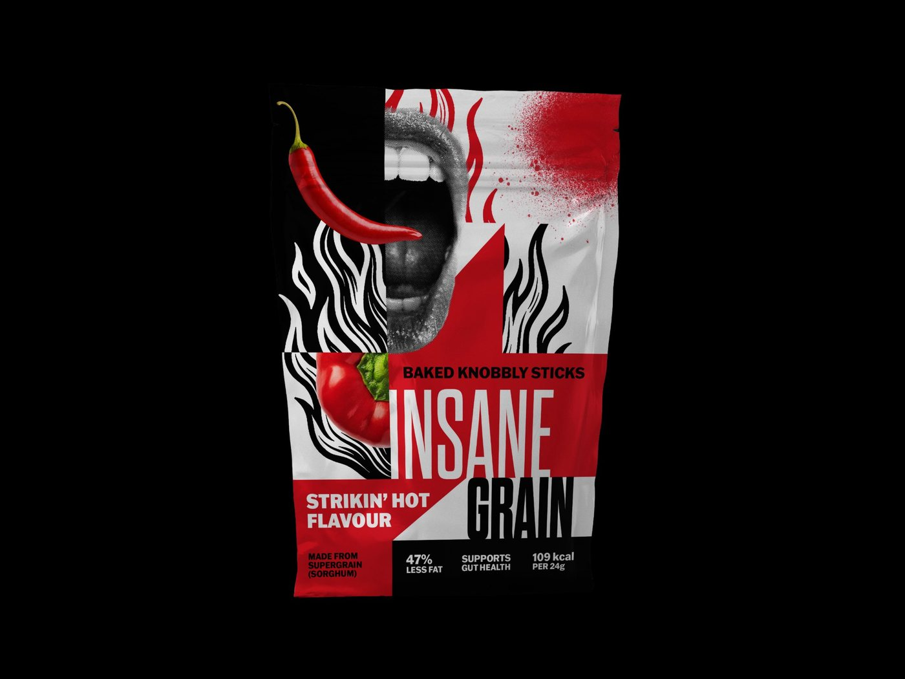
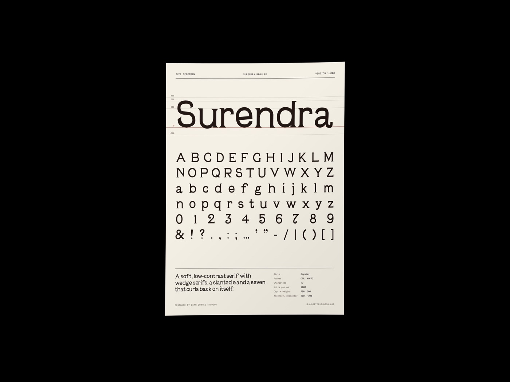
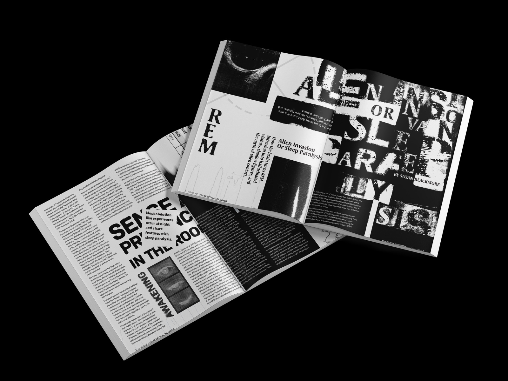
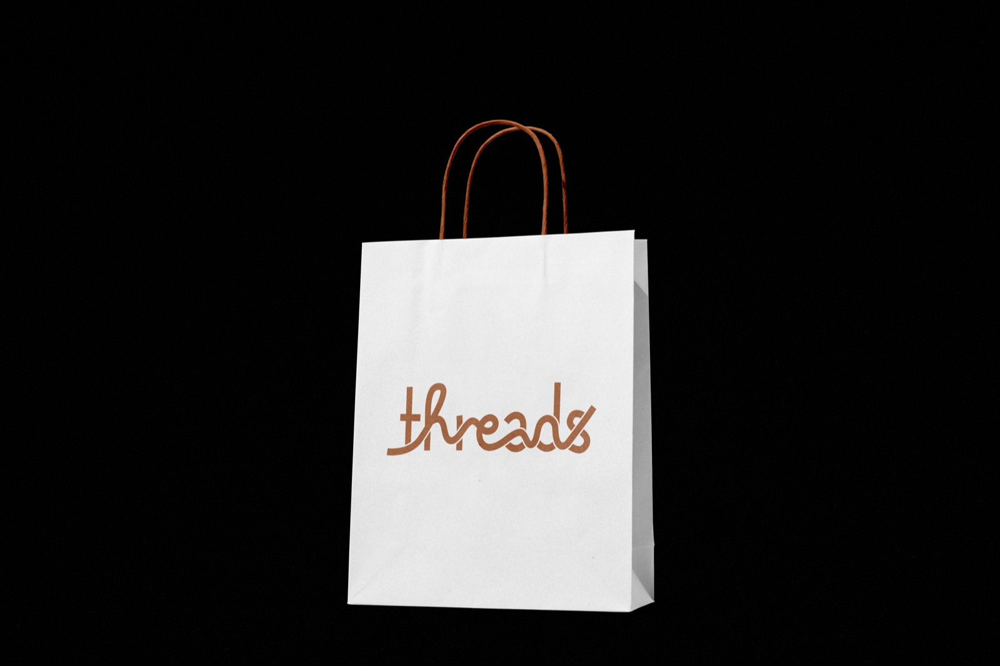
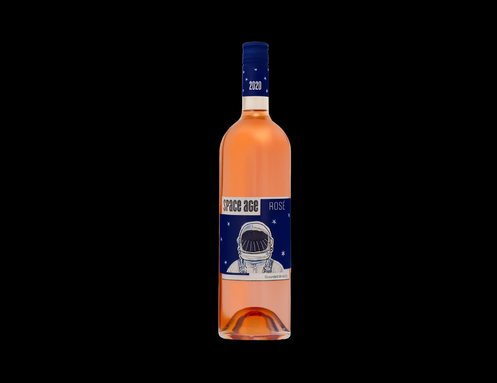
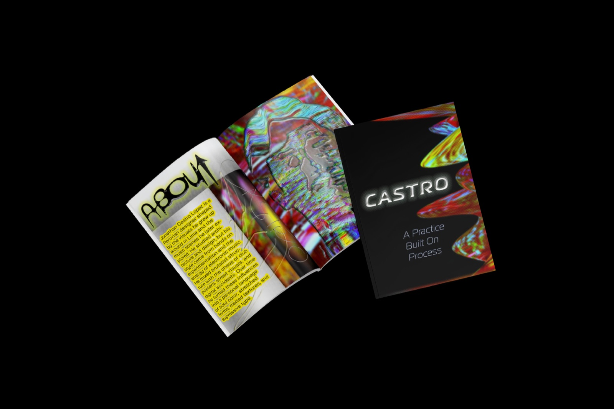
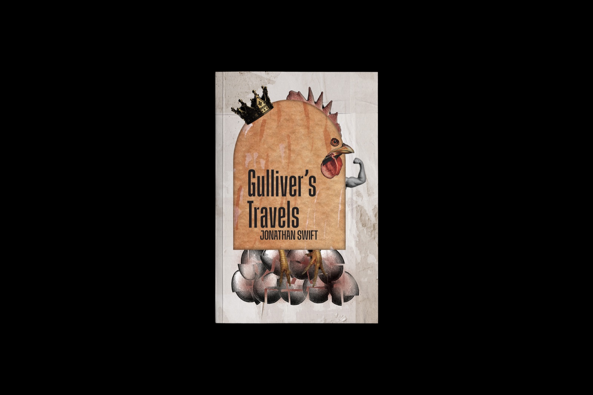
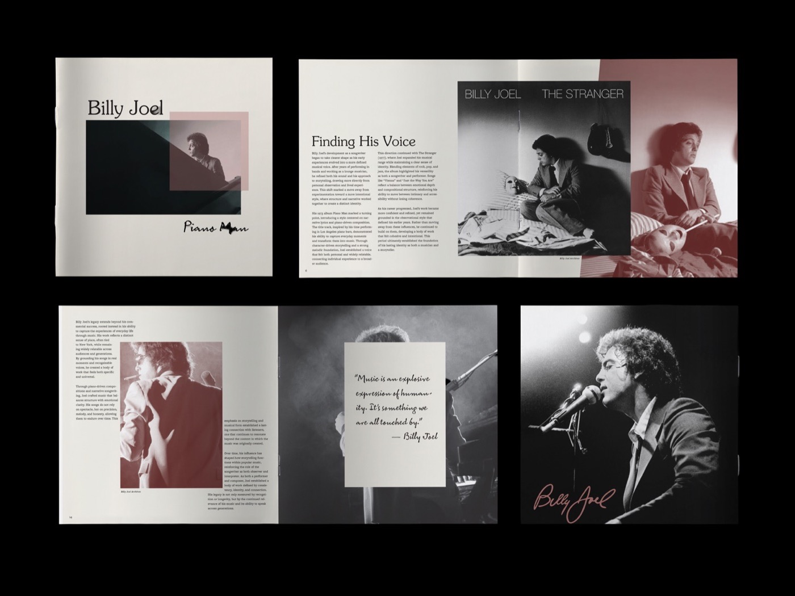
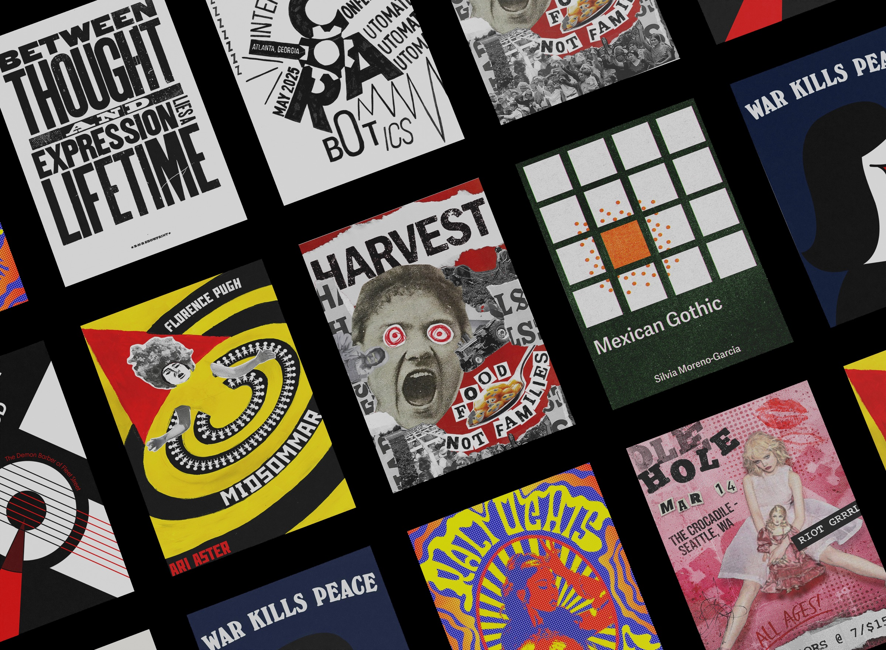
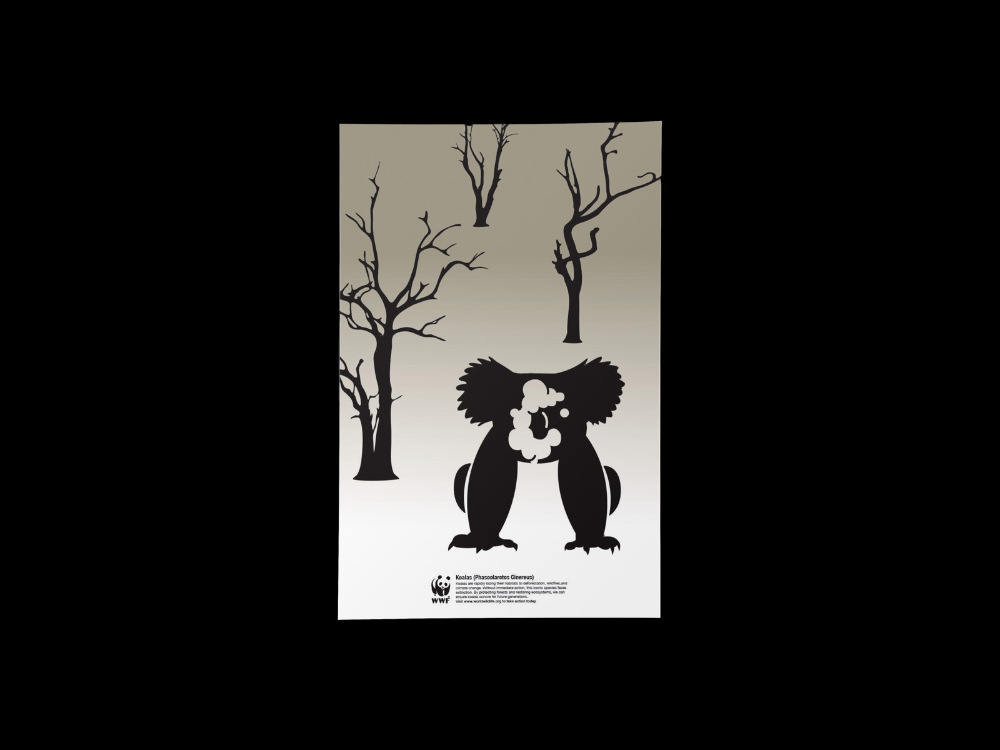

Allwork
Identities, packaging, publications, posters and one typeface.
11 projects · 2025–2026

Insane Grain A health snack that refuses to look polite: a halftone mouth, real chilies and tall condensed type. [ View project ↗ ]
Surendra A typeface drawn from old wood and metal type specimens. Every heading on this site is set in it. [ View project ↗ ] City Reliquary
An identity for a museum of everyday objects, built on a negative-space CR mark.
[ View project ↗ ]
City Reliquary
An identity for a museum of everyday objects, built on a negative-space CR mark.
[ View project ↗ ]

Alien Invasion or Sleep Paralysis? Spreads about the space between dreaming and waking: distorted type, held in place by a strict grid. [ View project ↗ ]
Threads A logotype for a youth clothing retailer, drawn as one continuous thread, then animated. [ View project ↗ ]
Space Age A rosé label with an astronaut, and a vineyard reflected in the visor. [ View project ↗ ]
Designer Tribute Zine An eight-page folded zine and a quote poster for designer Jonathan Castro. [ View project ↗ ]
Gulliver's Travels A full paperback wrap: a rooster crushing eggs, for a war over which end to crack. [ View project ↗ ]
Billy Joel Tribute Booklet Sixteen pages on Billy Joel and Vienna, in cream, charcoal and burgundy. [ View project ↗ ]
Historical Poster Styles Nine weeks, nine posters: Dada, the Stenberg brothers, Modernism and more. [ View project ↗ ]
Disappearing Species A koala silhouette filled with cooling towers. One image instead of a page of statistics. [ View project ↗ ]